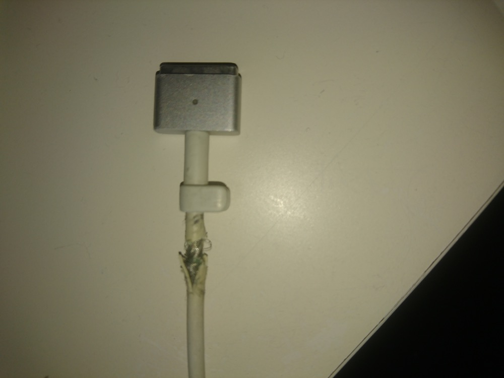
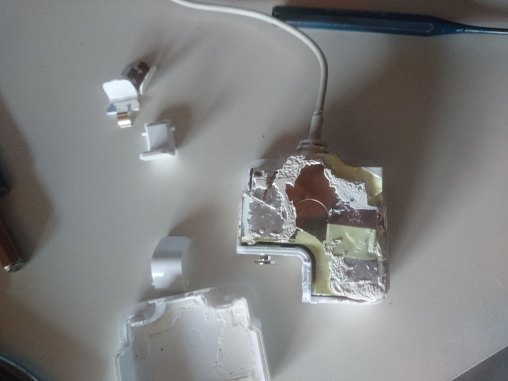
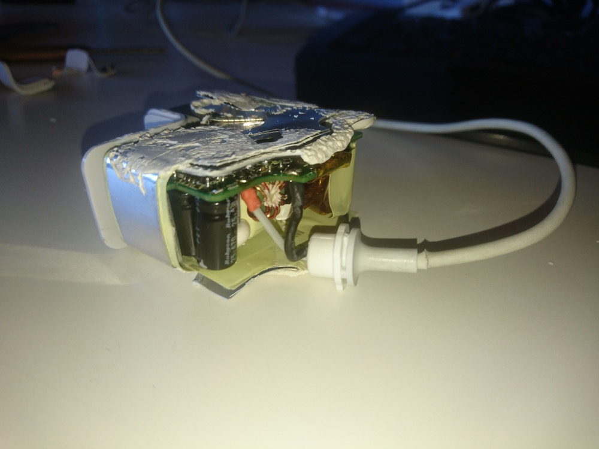
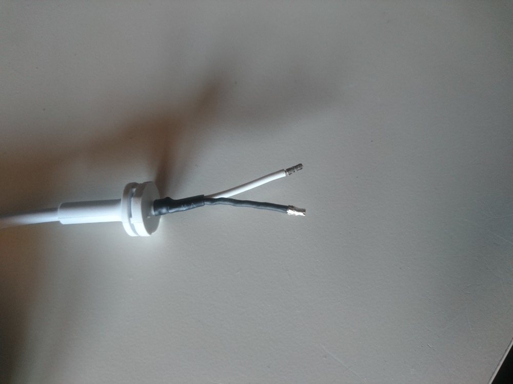
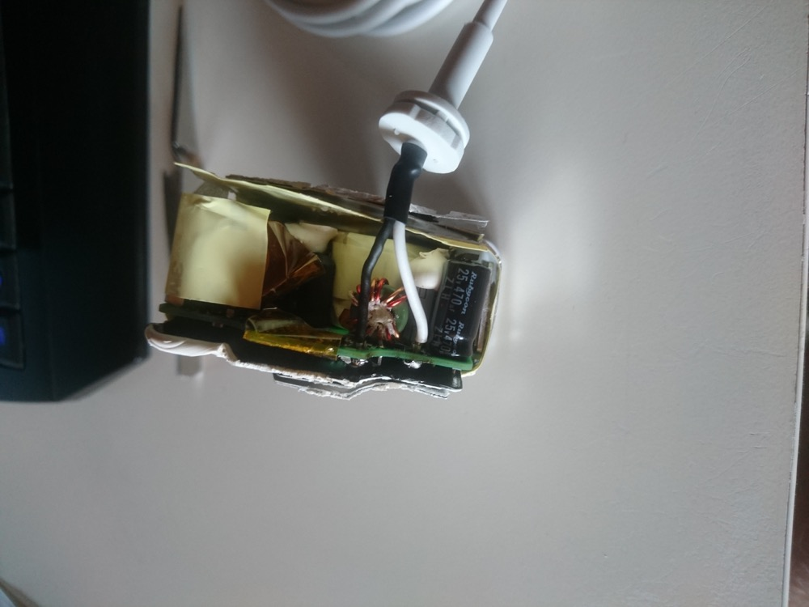
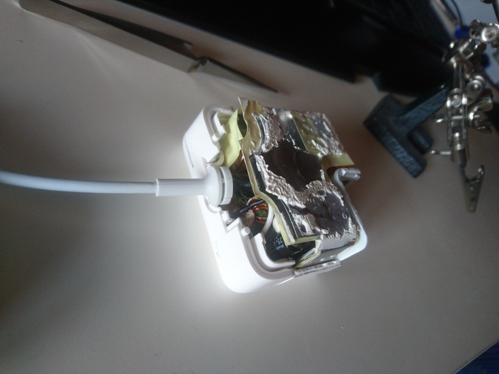
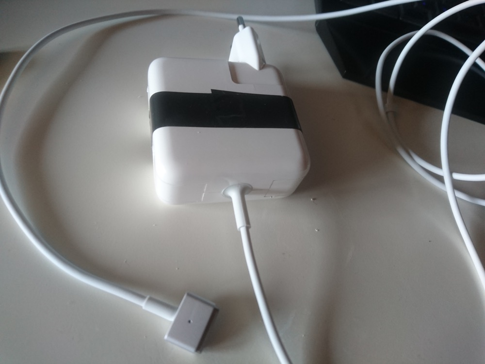

tgauweiler / MacBook Air power supply
Introduction
My macbook power supply cable got the typical apple problem and cracked open at the connector.

For a long time I helped myself with some electronic tape, but after my macbook did some strange sounds, depending on how the cable was lying, it was time to replace it.
Replacement
Because I only heard negative things about knockoff power supplies, I decided to fix my original one. For this I ordered a fitting replacement cable for ~12€.
Opening the case took some force, mostly because apple choose to glue everything together.

Next I unsoldered the old cable and noticed that the old cable had some bigger end connections on the cable.

So I crimped some fitting ones on the new cable.

And soldered it to the PCB.

Closing everything again took a long time. Mostly because there is no space left in the case and Apple really used a lot of glue.

Because I didn’t want to use hot glue to keep everything together, I used some electric tape. Works as good as new.

Conclusion
The bigger end connections were a surprise and I had to get some fitting ones first. Opening and closing the case took most of the time and left scars on the case. But it is working again and was far cheaper than ~80€ for a new one.